二叉树的性质和存储结构
性质：
- 在二叉树的第i层上至多有2i-1个结点（i>=1）、至少1个
- 深度为k的二叉树至多有2k-1个结点（k>=1）、至少k个
- 对任何一棵二叉树T，如果其叶子树为n0，度为2的结点数为n2，则n0=n2+1
两种特殊形式[特殊情况可复原]：
- 满二叉树：
一棵深度为k且有2k-1个结点的二叉树
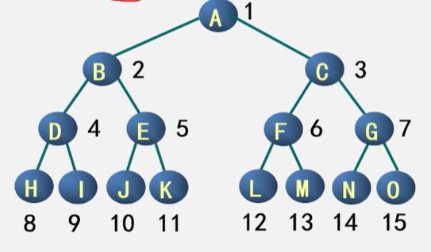
特点：
- 每一层上的结点数都是最大结点数（每层都满 2. 叶子节点全部在最底层 3. 在同深度的二叉树中结点、叶子结点个数都最多
编号：
- 从根结点，自上而下，自左而右 2. 每一结点位置都有元素
- 完全二叉树：
深度为k、具有n个结点的二叉树，当且仅当每一个结点都与深度为k的满二叉树中编号为1~n的结点一一对应
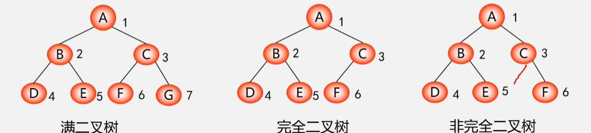
在满二叉树中，从最后一个结点开始，连续去掉任意个结点=一棵完全二叉树
特点：
- 叶子只可能分布在层次最大的两层上 2. 对任一结点，如果其右子树最大层次为i，左子树的最大层次必为i/i+1
性质：
- 具有n个结点的完全二叉树的深度为[log2n]+1[不大于x的最大整数]
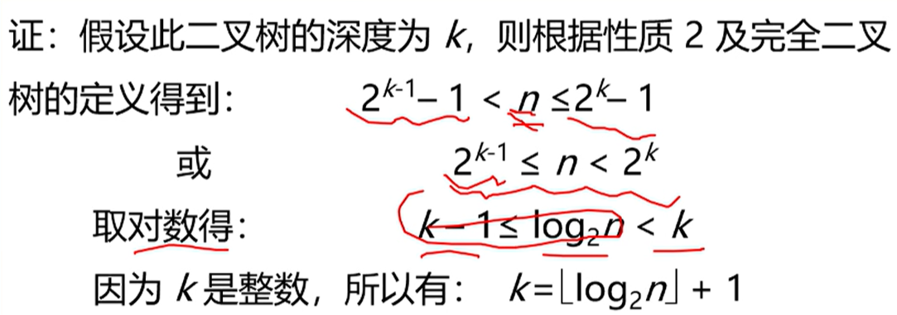
- 如果对一棵有n个结点的完全二叉树（深度为[log2n]+1）的结点按层序编号（从第1层到第[log2n]+1层，每层从左到右），则对任一结点i（1<=i<=n）：
- i=1：结点i是二叉树的根，无双亲
i>=1：双亲是结点[i/2]
- 2i>n：结点i为叶子结点，无左孩子
2i<=n：左孩子是结点2i
- 2i+1>n：结点i无右孩子
2i+1<=n：右孩子是结点2i+1
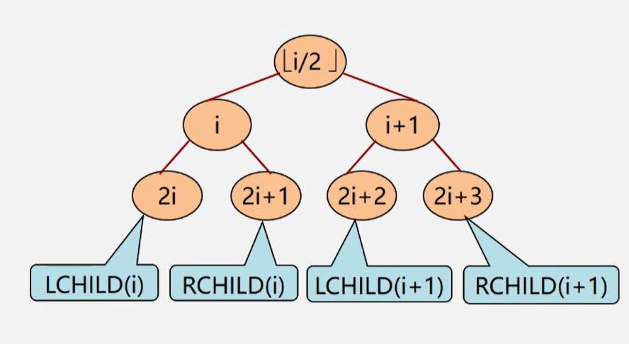
存储结构：
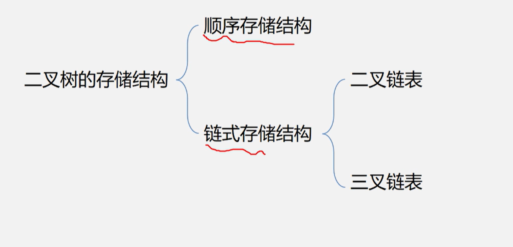
- 二叉树的顺序存储结构：
按满二叉树的结点层次编号，依次存放二叉树中的数据元素
#define MAXTSIZE 100
Typedef TElemType SqBiTree[MAXTSIZE]
SqBiTree bt;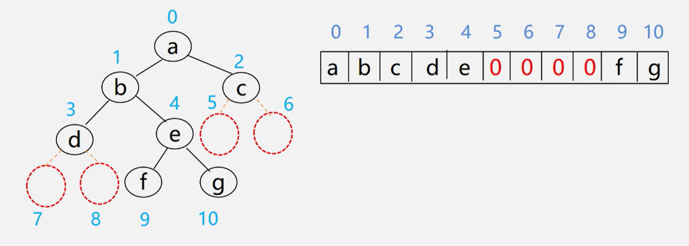
缺点：
最坏情况：深度为k且只有k个结点的单支树需要长度为2k-1的一维数组（右单支树）
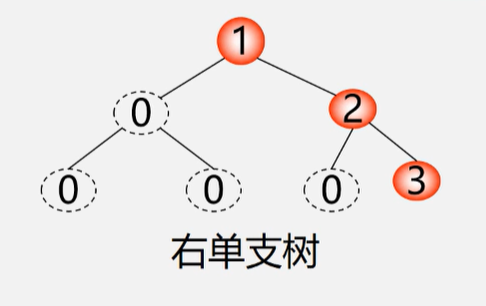
特点：
- 结点间关系蕴含在存储位置中
- 浪费空间，适合满二叉树、完全二叉树
- 二叉树的链式存储结构：
特点：
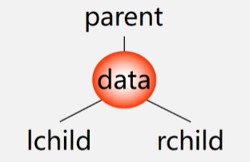
存储方式：
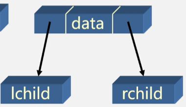
typedef struct BiNode{
TElemType data;
struct BiNode *lchild,*rchild;//左右孩子指针
}BiNode,*BiTree;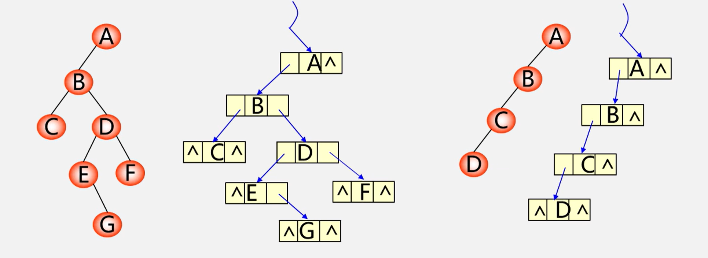
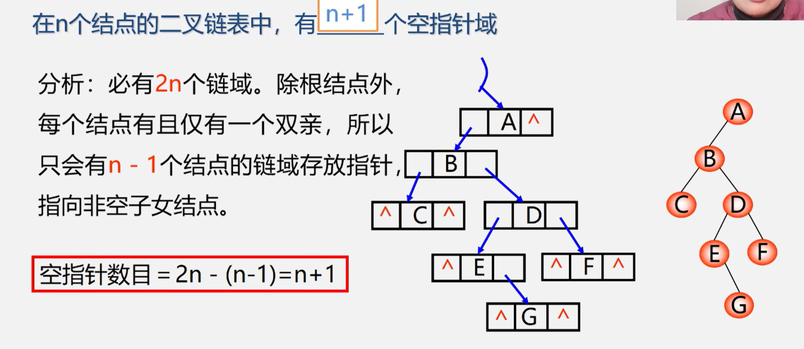
- 三叉链表：
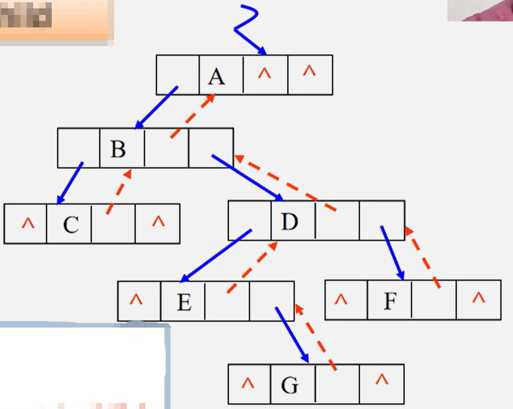
typedef struct TriTNode{
TelemType data;
struct TriTNode *lchild,*parent,*rchild;
}TriTNode,*TriTree;